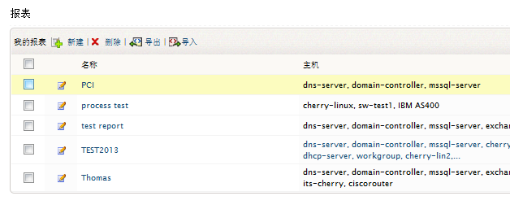
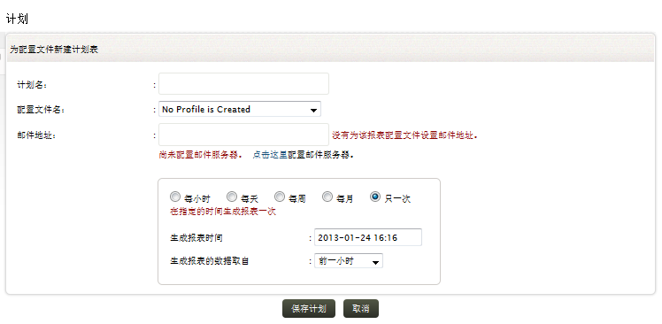
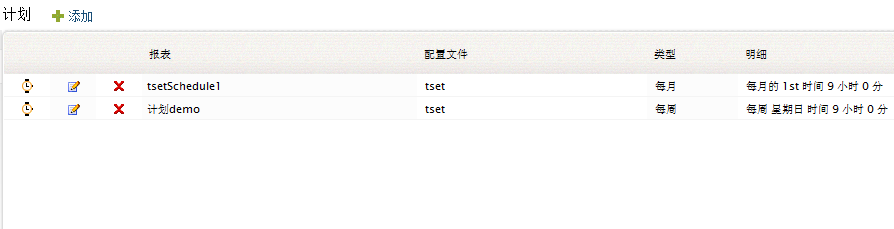

报表配置文件
在使用EventLog Analyzer生成事件报表，您需要首先创建一个报表配置文件，要创建报表配置文件，可通过以下菜单实现：
要创建报表配置文件，请参阅“怎样创建自定义报表”部分的步骤。
怎样编辑报表配置文件？
编辑/删除菜单将会将您到到我的报表明细页面，在这里您可以查看所有创建的报表配置文件，每个报表配置文件都有它对应的编辑图标。

- 点击编辑图标即可编辑选择的报表配置文件。
怎样删除报表配置文件？
-
选择要删除的报表配置文件对应的复选框。
-
点击删除菜单链接即可删除所选的配置文件。
我的报表
在我的报表页面，您可以查看报表配置文件的名称、指派的主机、上次计划报表生成的时间、指派的计划信息，您还可以执行为配置文件添加新计划操作。
计划
当创建了一个报表配置文件后，您可以为此报表配置文件配置周期性自动生成并分发。您可以选择“只一次”，报表配置文件将创建为无计划模式，您可以在之后为其设置一个计划。如果已经为配置配置文件设置了计划，那么新设置的计划将会替代之前的计划。
要为报表配置文件创建计划，可通过以下菜单实现：
要创建一个计划，请参阅下面的步骤：

-
输入计划的名称。
-
选择计划要关联的报表配置文件。
-
输入生成的报表要分发到的邮件地址。
-
如果未配置邮件服务器，请先配置邮件服务器设置。
-
选择报表生成的周期（每小时、没天、每周、每月或只一次）。
-
设置第一次报表生成的日期和时间。
-
选择要生成报表的时间段。
怎样编辑计划？

编辑/删除菜单将会将您带到计划页面，在这里您将会看到所有创建的计划。
怎样禁用/启用计划？
怎样编辑计划？
在每个计划行，都对应有一个编辑图标。
怎样删除计划？
计划
在计划页面，您可以查看所有的计划明细，如计划的名称、关联的报表配置文件、计划的类型以及按每个计划生成的报表信息，还可以执行启用/禁用、编辑、删除操作。
|